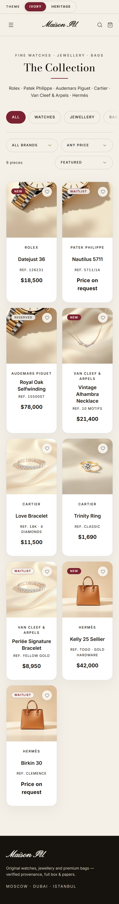
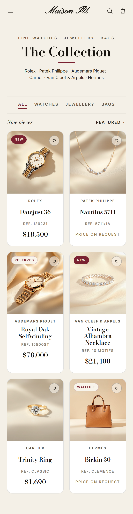
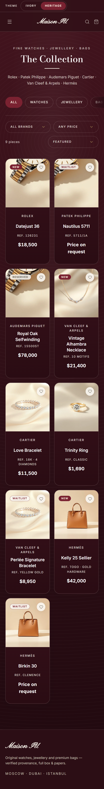
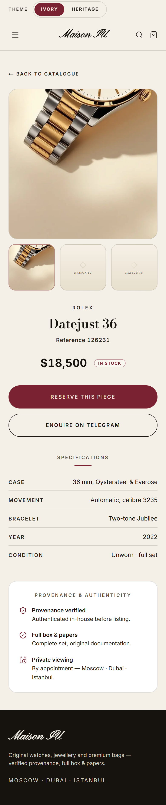
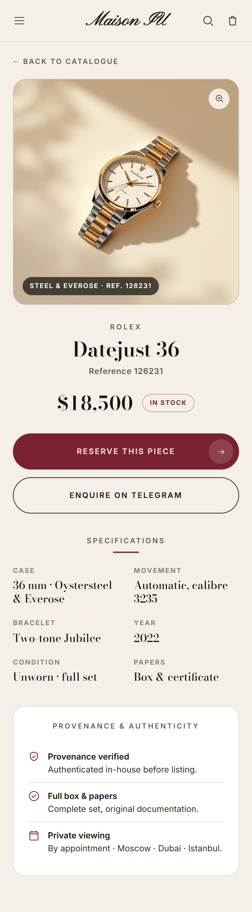

Наглядное ревью ДО | ПОСЛЕ для магазина. Фокус — восприятие люкса на мобилке (истинные 390px), обе темы (Ivory / Heritage). Боевые файлы shop не менялись — это мокапы-направления в копии.
Сетка уже крепкая. Главное — убрать e-com-«шум» и выровнять ритм, чтобы карточки читались как одна коллекция, а не как маркетплейс.



Хорошая иерархия, но два места «удешевляют»: пустые плейсхолдеры галереи и спек-таблица с линейкой под каждой строкой.


divide-y — хайрлайн под КАЖДОЙ строкой (самый частый AI-tell спек-таблиц); значения мелкие 14px.Две темы Ivory / Heritage переключаются корректно — усиливаем консистентность и добавляем сдержанную жизнь.
@media(prefers-reduced-motion:reduce). Унифицирующий vignette лечит и Heritage-«окна».site/design-review/mockups/ на бренд-токенах магазина (garnet #7A2231, Inter/Bodoni/Pinyon). Боевые файлы site/shop НЕ изменялись, ничего не деплоилось. Все мокапы: 0 horizontal-overflow на 390.